Сегодня · 08:00

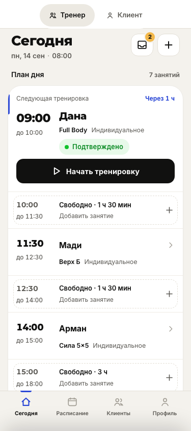

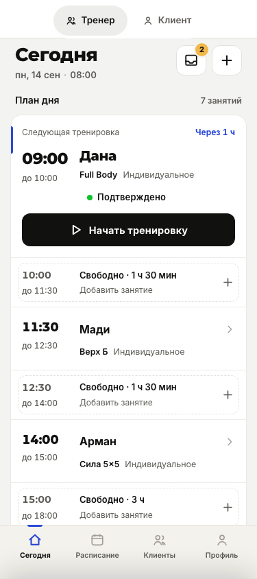
Почти нейтральный фон, радиусы карточек 16 px и кнопок 12 px; статус показан точкой и текстом.
Шесть одинаковых состояний на двух ширинах. Слева — текущий «Чернильный блокнот», справа — эксперимент «Строгий». На узком экране пары расположены друг под другом. Нажмите на снимок, чтобы открыть оригинал.
Оформление по умолчанию сохранено. Примеры получены через интерфейс Chromium на чистых демоданных, с локальными шрифтами. Время зафиксировано: 08:00 для личной тренировки, 20:30 для мини-группы.


Почти нейтральный фон, радиусы карточек 16 px и кнопок 12 px; статус показан точкой и текстом.
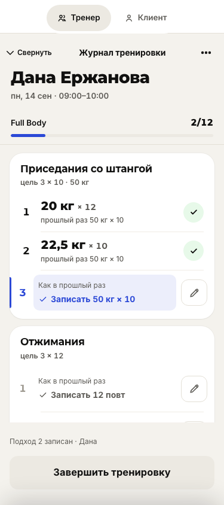
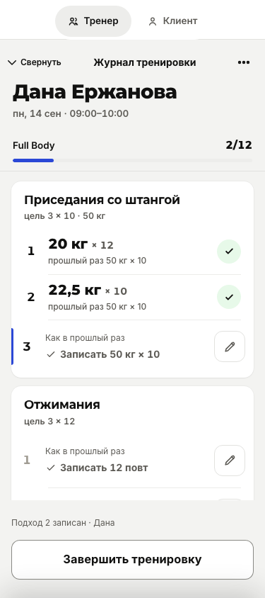
Карточки 14 px; у следующего подхода убрана заливка; вторичная кнопка белая с рамкой.
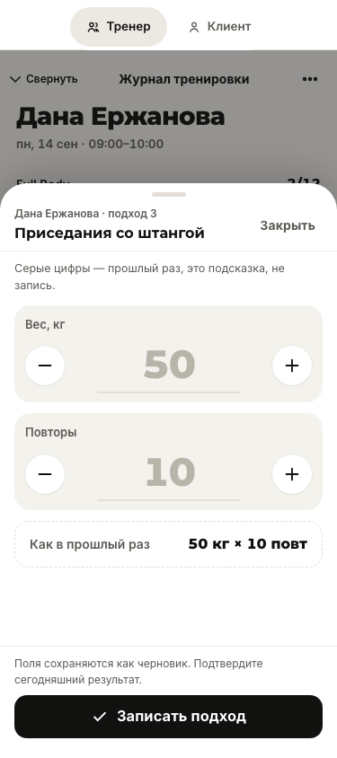
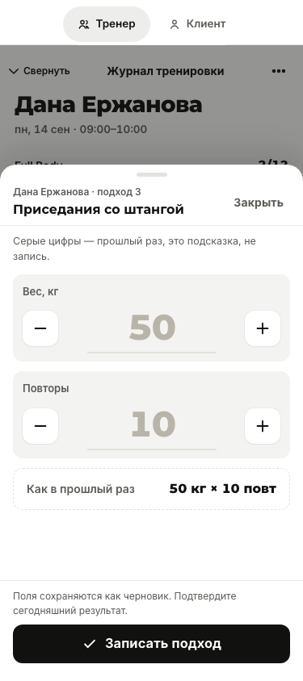
Верхние углы шторки 20 px; поля и кнопки используют более компактные радиусы, тень нейтральная.
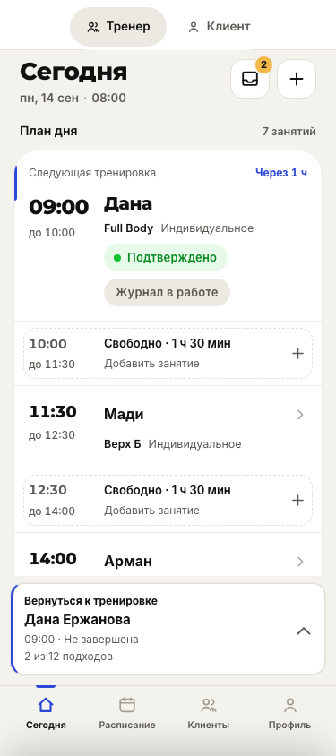
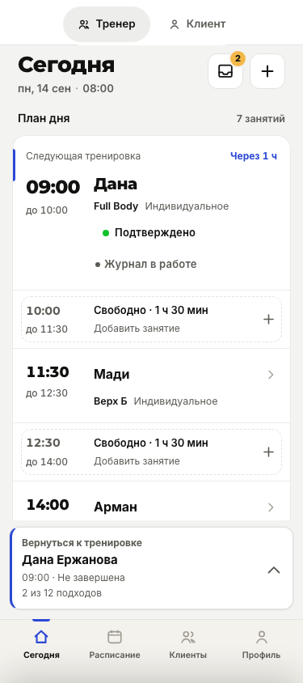
Полоса с радиусом 12 px и графитовой подписью; единственный синий акцент остаётся слева.
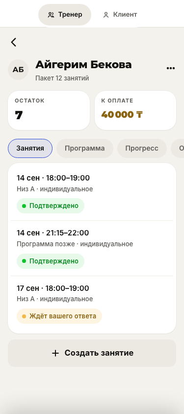
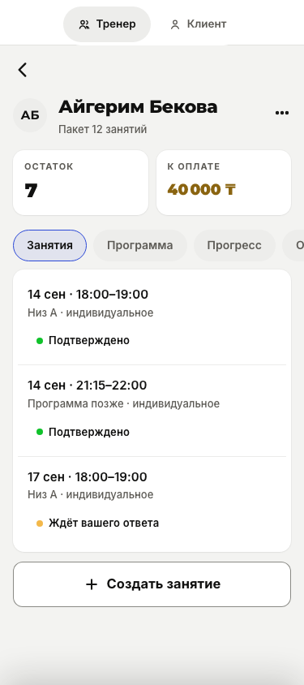
Карточки 14 px; статусы без пастельных заливок; фильтры остаются капсулами.
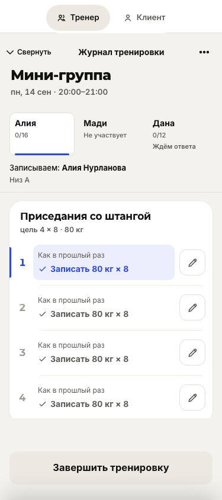
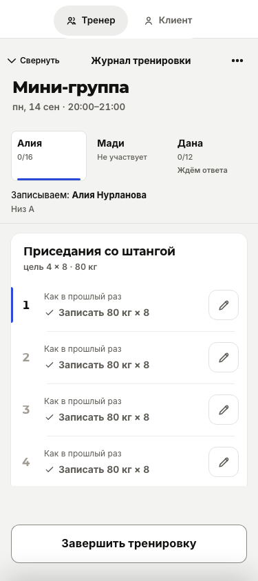
Карточки упражнений 14 px, участников 8 px; следующий подход отмечен синей чертой без заливки.
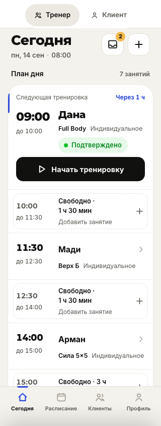
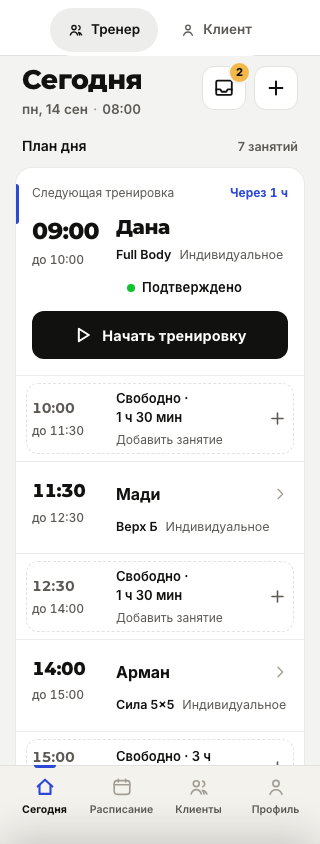
Почти нейтральный фон, радиусы карточек 16 px и кнопок 12 px; статус показан точкой и текстом.
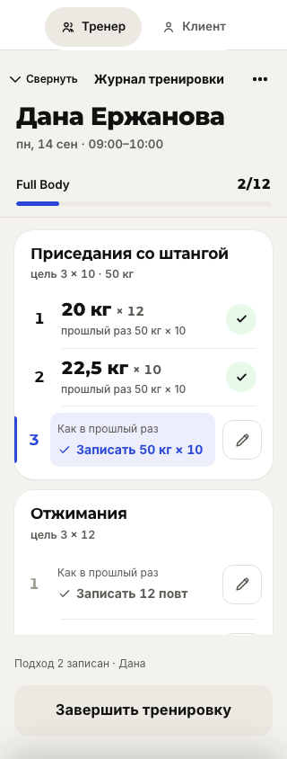
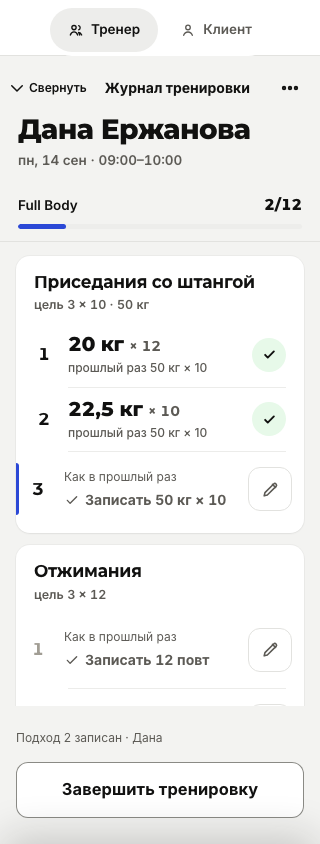
Карточки 14 px; у следующего подхода убрана заливка; вторичная кнопка белая с рамкой.
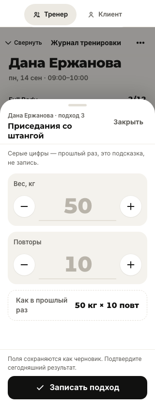
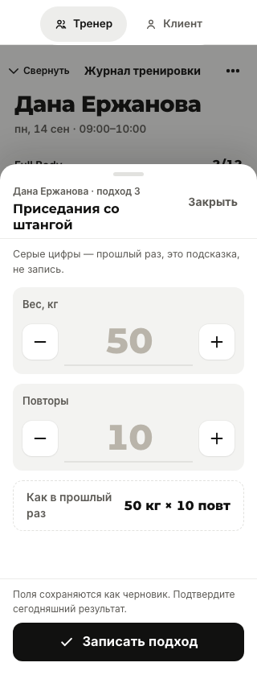
Верхние углы шторки 20 px; поля и кнопки используют более компактные радиусы, тень нейтральная.
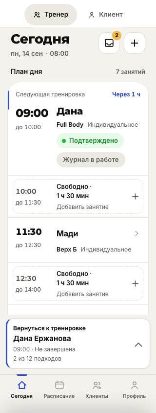
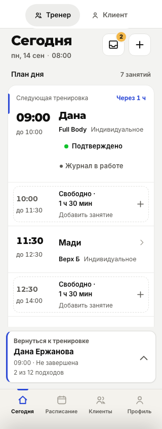
Полоса с радиусом 12 px и графитовой подписью; единственный синий акцент остаётся слева.
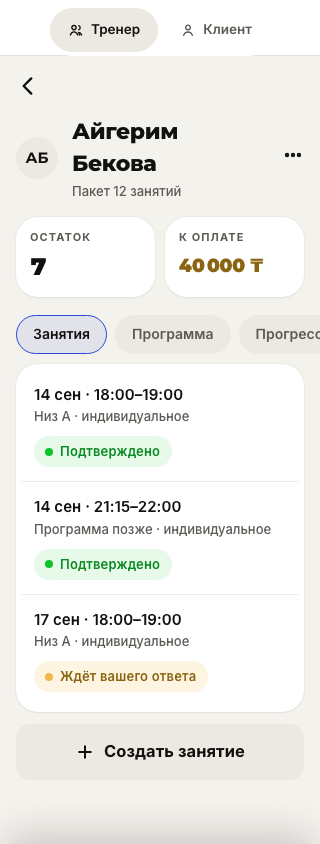
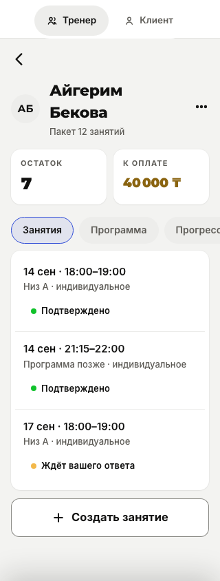
Карточки 14 px; статусы без пастельных заливок; фильтры остаются капсулами.
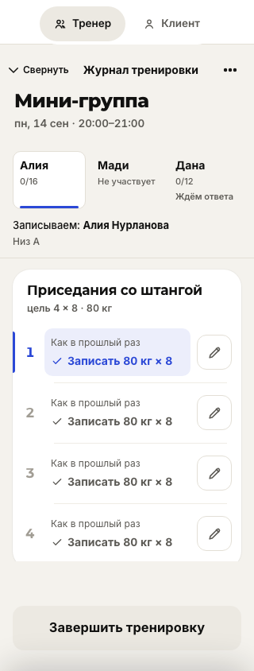
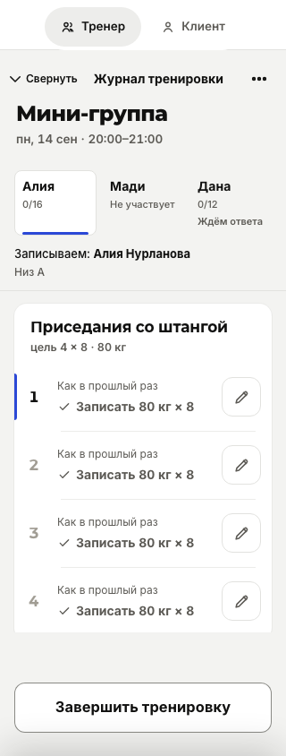
Карточки упражнений 14 px, участников 8 px; следующий подход отмечен синей чертой без заливки.
Проверка текущего оформления: ноль изменённых пикселей в 12 снимках после токенизации и в 12 снимках после добавления строгого режима. Это сравнение браузерного прототипа, а не проверка физического телефона.